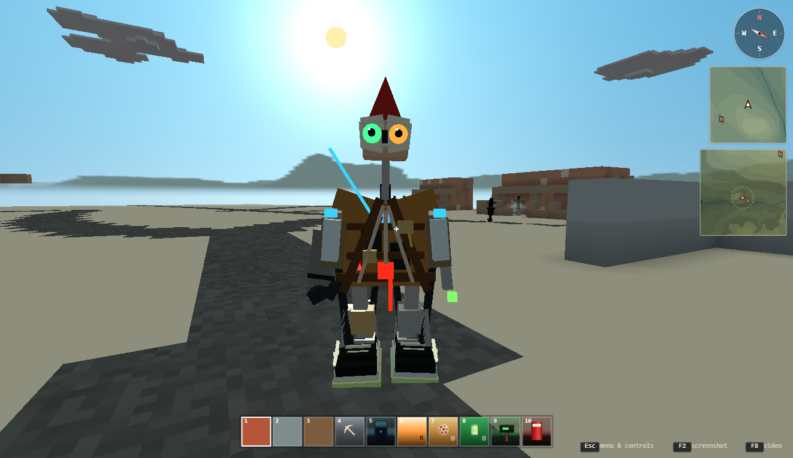
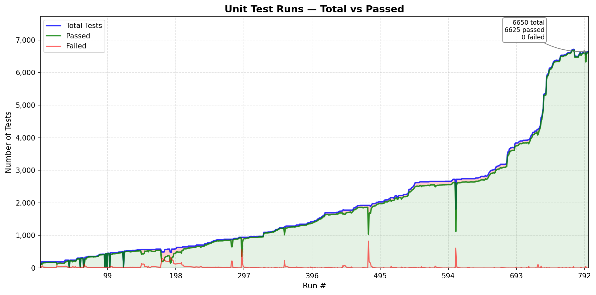
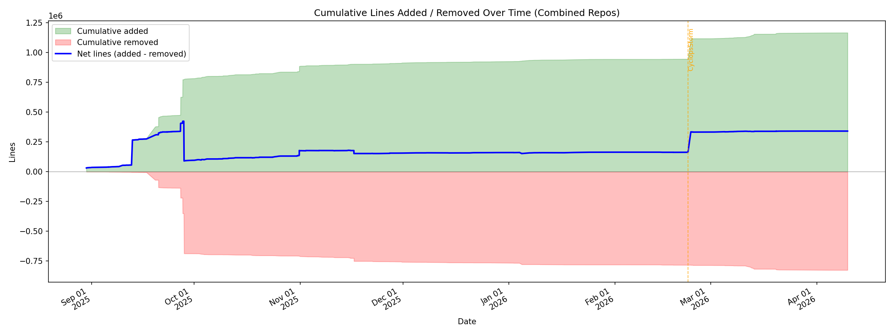

Revised by Astra, Fable and Nate:
“Cyclops Storm” Prolog

Open lab notes on using AI to help build a logic engine for science-fiction worlds. My Substack.
The earlier work in BadScienceFiction-CyclopsStorm grew through continual refactoring. I'm now investigating a fresh Python implementation in AkiyaBlocks-CyclopsStorm. I want to see which behaviors improve, which carry over, and what gets lost in the rewrite.
Both engine repositories are currently private. I'll make them public in the future; their GitHub links require access until then.
Are we doing good?
I think so. In the shared checks, the rewrite keeps the basic reasoning working and improves how it handles calculations and information. That gives me more confidence in building the game on top of it.
18 vs. 10 checks pass, out of 21.
16 vs. 10 pass when the two cases that allow a timeout are left out.
17 of 21 already pass in the first saved rewrite.

Explanation support still needs work, including a check the earlier engine passes. I want to be able to inspect why the engine reached an answer, too. I can't put a reliable “times faster” number on the rewrite: we haven't recorded comparable working hours or costs. The progress overview summarizes the changes and links to the detailed measurements.
Comparison results
I gave both versions the same 21 small tasks and checked whether they produced the expected results. The tasks cover following rules, working with numbers and information, handling problems, and responding to requests for explanations.
Pass means the result met the rule for that task. Some tasks expect an answer, some expect an error, and two allow the test runner to stop a search that has no end. How the results are counted.
What the results mean
The script's results show what carried over, what improved, and what still needs work. Each number below is the count of passing checks in that area.
| Area | Earlier version | Rewrite |
|---|---|---|
| Following rules to find answers | 6 of 6 | 6 of 6 |
| Working with numbers and information | 3 of 9 | 9 of 9 |
| Errors and searches that do not finish | 0 of 3 | 3 of 3* |
| Responding to requests for explanations | 1 of 3 | 0 of 3 |
The rewrite keeps the basic reasoning covered by these checks and does better at handling information without losing or changing it. That matters for a game built around characters making decisions from rules. Explanation support remains a gap: one check that passes in the earlier version does not yet pass in the rewrite.
* Two rewrite passes mean the test runner stopped waiting on searches with no end. They do not show the engine recognizing that its search was unfinished. Without these two tasks, the rewrite passes 16 of 19 checks, compared with 10 of 19 for the earlier version.
Full counts and saved versions
Using the recorded versions of the code, the reimplementation passed 18 cases and the earlier implementation passed 10. Both were given the same cases and judged by the same rules. A worked example shows the inputs, expected answers, and what each engine returned; the full results list all 21 outcomes.
| Result | Earlier | New |
|---|---|---|
| Pass | 10 | 18 |
| Fail | 11 | 3 |
| Unassessable | 0 | 0 |
| Pass rate for these cases | 47.6% | 85.7% |
| Outcome | Cases |
|---|---|
| Both pass | 9 |
| New passes, earlier fails | 9 |
| Earlier passes, new fails | 1 |
| Both fail | 2 |
| Unassessable | 0 |
The difference is eight more passing cases, or 38.1 percentage points, in this set. The cases were written with knowledge of both engines, so these percentages describe this particular comparison.
Method and limits
The comparison script runs each case in separate processes and records pass, fail, or unassessable. Twelve of the 21 cases (57.1%) use SWI-Prolog as the full source of expected results. One combines a SWI answer expectation with a judgment about the Python API, and eight use recorded human adjudications. Some cases also cite ISO clauses.
The explanation probes check whether a predicate answers a valid case and rejects a negative control. They do not check the contents of an explanation. The case corpus records these expectations and their sources.
The reimplementation does better on this set of cases. This deliberately chosen set cannot tell us whether starting over is generally more effective than continual refactoring. The run does not measure speed, memory use, or development effort. Explanation support and behavior on a broader set of programs remain open questions.
Implementation notes
The new kernel is written in Python. It supports Horn clauses, unification, backtracking, cut, negation as failure, stratified tabling, and an Event Calculus over authored story time. It runs without importing the earlier implementation.
Its README has examples; the behavior document describes the intended semantics.
Reference: the impact of agentic AI coding
DHH on programming and AI — Lex Fridman Podcast #501.
DHH describes how agentic AI changed his programming work: agents implement, test, and review code while he directs the work and decides what to accept. Read the transcript.
Earlier notes
The previous README preserves the refactoring history, articles, Harriet AI notes, the Spider narrative tool, and the test and code-change charts. Those charts track the earlier development process.
- Interactive quad chart and codepack
- Earlier architecture comparison with SWI-Prolog
- Earlier API and design document
- Codepack algorithm and schema
Test and code-change charts from the refactoring period

